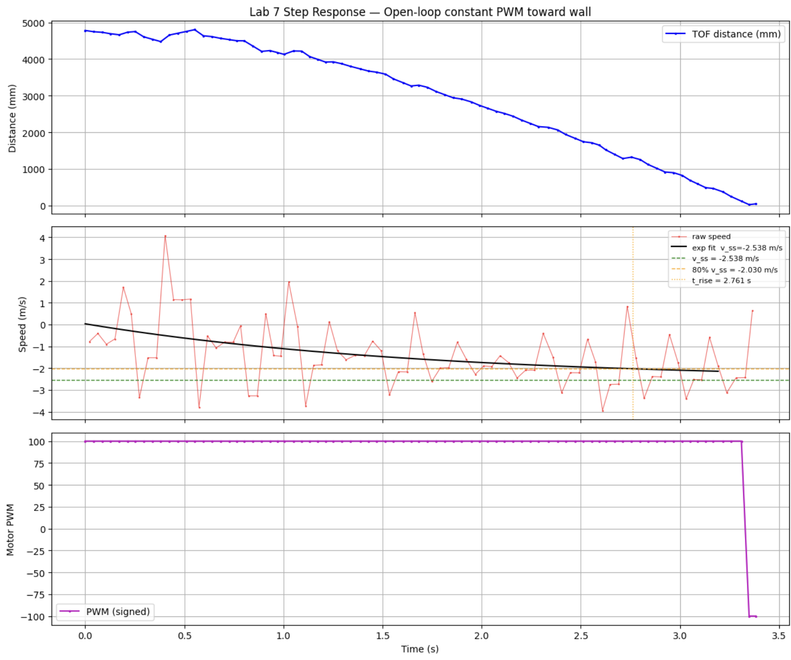
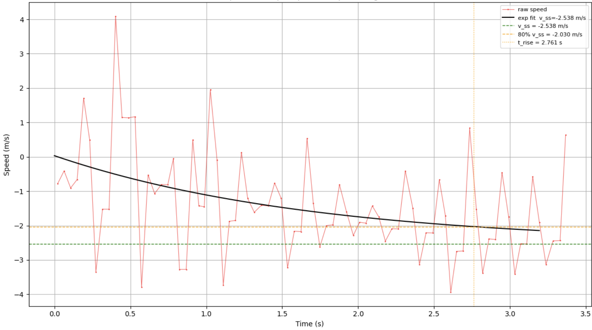
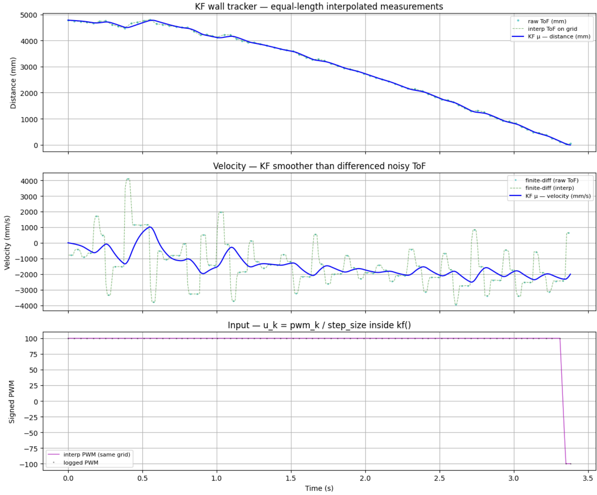
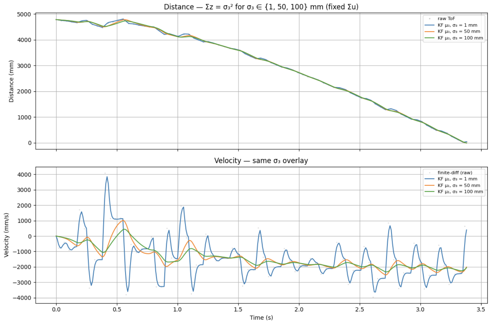
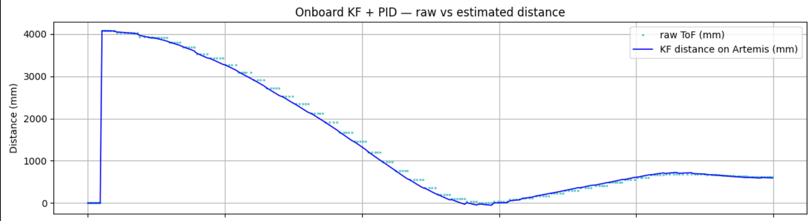

Lab 7: Kalman Filtering
Overview
This lab performs system identification on the open-loop wall approach and uses the identified discrete model to implement and evaluate a Kalman filter in simulation (Jupyter) and onboard (Artemis). The Kalman filter estimates both distance-to-wall and velocity from time-of-flight (ToF) measurements and the signed motor command.
System identification
I modeled the open-loop approach to the wall as first-order in velocity, with state
x = [distance to wall (mm); velocity (mm/s)]ᵀ. Distance decreases when the car drives toward the wall, so
steady-state velocity is negative in my sign convention (v = d(distance)/dt).
The experiment used the fully assembled differential-drive robot with a SparkFun Artemis as the main controller, a VL53L1X ToF sensor facing the wall for distance, and the onboard ICM-20948 IMU (present on the stack; not the primary signal for this wall-distance KF, which uses ToF + PWM).

I logged an open-loop constant-PWM run (Lab 5 style), trimmed the ends (start_cut = 3, end_cut = 35),
converted time to seconds, and took a finite-difference speed. I fit an exponential to the speed in
FIT_T_RANGE = (0, 3.2) s and read off steady-state speed and a rise time at 80% of v_ss
(my notebook uses RISE_FRAC = 0.80, not 90%).

From the exponential fit I obtained v_ss ≈ −2538.06 mm/s and t_rise ≈ 2.7614 s at 80% of
v_ss. Treating the step input as normalized u = 1 at STEP_PWM = max_pwm = 100, the
notebook identifies a positive drag-style scalar d = 1 / |v_ss| ≈ 0.000394 s/mm and a momentum parameter
m from
m = −d · t_rise / ln(1 − RISE_FRAC), which yields the −d/m ≈ −0.5828 1/s entry I used in the
A matrix (matching the discrete Ad diagonal I use at dt = 0.01 s).
The identification run used STEP_PWM = 100, which is in the same signed PWM units as the Lab 5 wall runs and is a
“similar magnitude” step (large enough to show a clear first-order rise in speed without saturating the entire drive range).
For the wall approach model with positive PWM pulling distance down, I use a negative input column in B (mm/s² per PWM). That matches both the Jupyter discrete Bd and the firmware.
Code (step-response / identification setup) (from my notebook):
# step response trimming + fit settings
start_cut = 3
end_cut = 35
FIT_T_RANGE = (0, 3.2)
RISE_FRAC = 0.80
# ... compute v_ss, t_rise from the fit ...
d = 1.0 / abs(v_ss)
v_rise = v_ss * RISE_FRAC
# momentum-ish parameter from rise time
m = -d * t_rise / np.log(1.0 - RISE_FRAC)Discrete model used later (Jupyter KF + Artemis), same notebook / hand calculations:
# discrete model used in both Jupyter + firmware
dt = 0.01
Ad = [
[1.0, dt],
[0.0, 0.994172],
]
Bd = [
[0.0],
[-0.147926],
]
# measures distance (TOF)
C = [[1, 0]]
Here C = [[1, 0]] picks the first state (distance), because that is what the ToF measures. The handout’s
[[−1, 0]] example corresponds to a different position sign convention; in this report, a larger ToF reading means
the robot is farther from the wall, so the measurement is y = (1)·distance + noise.
For Jupyter, the handout’s discrete model uses a fixed discretization period dt = 0.01 s (100 Hz), which is
the sampling time embedded in the Ad and Bd values above.
Kalman filter simulation (Jupyter)
I pulled time, raw ToF, and signed PWM from a straight wall run (wall_t_ms, wall_dist_mm /
wall_raw_mm, wall_pwm). To match the lab handout, I linearly interpolated ToF and PWM onto a common
10 ms grid and called a lecture-style kf(mu, sigma, u, y) each step, with
u = pwm / STEP_PWM_REF and B_unit = Bd * step_size so the discrete input matches
Bd × (actual PWM).
ToF and PWM do not share the same native timestamps or count per second, so interpolation onto a single time vector ensures
every index k has a paired (u_k, y_k) for the KF loop (equal-length requirement).
The handout’s input scaling is implemented as u = pwm_actual / STEP_PWM_REF with
B_unit = Bd × step_size, so B_unit·u equals Bd·pwm (a unit step in identification maps
cleanly to the real PWM command used on the robot).
Process and measurement covariances:
Σu = diag(σ₁², σ₂²) with σ₁ = 1 mm, σ₂ = 100 mm/s
Σz = [[σ₃²]] with σ₃ = 50 mm for my baseline run

Code (kf + covariances) (from my notebook):
import numpy as np
# noise tuning
sigma_1 = 1.0
sigma_2 = 100.0
sigma_3 = 50.0
Sigma_u = np.diag([sigma_1**2, sigma_2**2])
Sigma_z = np.array([[sigma_3**2]])
def kf(mu, sigma, u, y, Ad, B_unit, C, Sigma_u, Sigma_z):
# keep shapes consistent (2x1 state, 2x2 covariance)
mu = np.asarray(mu, dtype=float).reshape(2, 1)
sigma = np.asarray(sigma, dtype=float).reshape(2, 2)
u_m = np.array([[float(u)]])
# predict
mu_p = Ad @ mu + B_unit @ u_m
sigma_p = Ad @ sigma @ Ad.T + Sigma_u
# update (distance measurement)
sigma_m = C @ sigma_p @ C.T + Sigma_z
kkf_gain = sigma_p @ C.T @ np.linalg.inv(sigma_m)
y_m = np.array([[float(y)]]) - C @ mu_p
mu = mu_p + kkf_gain @ y_m
sigma = (np.eye(2) - kkf_gain @ C) @ sigma_p
return mu, sigma
State initialization uses μ₀ = [distance_mm, velocity_mm/s]ᵀ. In practice, the first valid ToF measurement sets
distance = ToF[0], velocity is initialized to 0, and Σ₀ is chosen with high initial uncertainty
consistent with the chosen Σz on distance and σ₂² on velocity.
I then swept σ₃ ∈ {1, 50, 100} mm with Σu fixed. Smaller σ₃ tracks interpolated
ToF more tightly; larger σ₃ smooths more. That matches intuition: Σz is how much I trust the sensor
vs the model prediction.
Parameters affecting the filter
Kalman filter performance depends on the identified dynamics (Ad, Bd), sampling time
(dt in Jupyter vs dt_s onboard), initialization (μ₀, Σ₀), process noise
(Σu via σ₁, σ₂), measurement noise (Σz via σ₃), interpolation
assumptions, sign / measurement mapping (C), trim windows, and the relationship between the MCU poll rate and the
ToF update rate (how often prediction runs without a measurement update).

Onboard Kalman filter (Artemis)
I removed the linear ToF extrapolation and fused raw ToF in a Kalman filter every time a new range is ready, while predicting
every PID loop iteration using variable dt_s from millis() (clamped if needed). The PID error uses
the KF distance wall_kf_mu(0,0), not the raw reading.
This wall-distance Kalman filter gives a smoother, less noisy estimate of range than raw ToF, so the PID sees a stable “distance to wall” while still updating on real measurements. That reduces chatter and false corrections near the stop band, which is important for reliably stopping without overshooting due to spike range readings.

Following the lab instructions, I validated the onboard KF with debugging plots (raw vs KF distance and residual) and a short demo video before trying to speed up the approach. Linear ToF extrapolation was removed first so the Kalman filter, not the extrapolator, defines the distance estimate used by the PID.
Code (Kalman predict + update pattern) (from my firmware):
#include <BasicLinearAlgebra.h>
using namespace BLA;
// process noise (picked to keep velocity from blowing up)
static const Matrix<2, 2> WALL_KF_SIGMA_U = {
1.0f, 0.0f,
0.0f, 10000.0f
};
// ... dt_s computed from millis(), clamped if needed ...
Matrix<2, 2> Ad = { 1.0f, dt_s,
0.0f, 1.0f - 0.5828f * dt_s };
Matrix<2, 1> Bd = { 0.0f,
-14.7926f * dt_s };
Matrix<2, 1> mu_p = Ad * wall_kf_mu;
mu_p(1, 0) += Bd(1, 0) * (float)wall_last_pwm;
Matrix<2, 2> Sigma_p = Ad * wall_kf_Sigma * ~Ad + WALL_KF_SIGMA_U;
Measurement update uses C = [1, 0], σ_z = 2500 (i.e. 50 mm std) on distance, and Joseph-style
(I − K C) Σ_p via Kmat * Cmat. The BLE log is
WALL:<ms>,<raw>,<kf>,<err>,<pwm> so Jupyter can plot raw vs KF on the same axes.
On the Artemis, Ad/Bd are recomputed using the measured loop interval dt_s, which is the
embedded discretization of the same continuous model (as opposed to Jupyter’s fixed dt = 0.01 s).
PID on KF distance:
error = dist_est - (float)setpoint_mm;